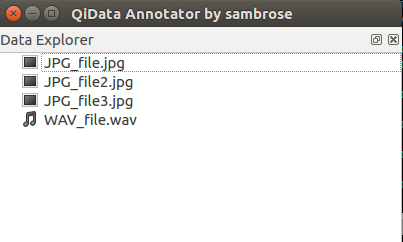
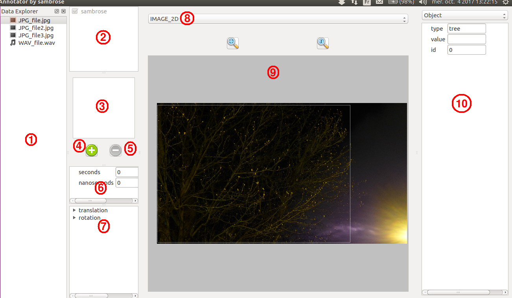
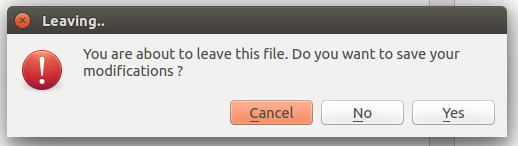
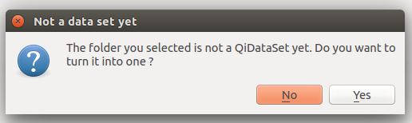
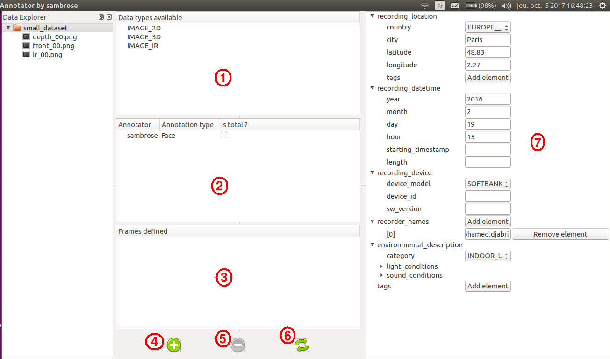

2. Basic usage¶
2.1. Start the annotation tool¶
To start the annotation tool, run the following command:
$ qidata annotate <userID> <path>
userID must be something that can be easilly traced back to you, like your
gmail account name, or your employee number in your company. This information is
used to “sign” your annotations and keep track of who annotates what.
path is the folder containing the data you want to annotate. No argument
will default to your current location.
Warning
Note that <path> MUST be a folder. If you only want to annotate a single file, you might use this command instead:
$ qidata open -w <userID> <filepath>
You should now be able to see a window displaying a file tree.
You can select any file in the tree, as only supported files are displayed. On the day I write this documentation, only images are really well supported. WAV files support is still in alpha and does not have many specific features yet, so it won’t be mentioned for now. Now, pick up a file, and let’s go !
2.2. Add annotations on a file¶
When annotating a file, the interface will look like this:
There are several areas:
- File selection area
- This box is absent if you used
qidata opencommand. You can use it to switch from one file to another.
- Annotator selection area
- This area allows you to select whose annotations you want to see. Your own name is always ticked and cannot be unticked. But if this file was also annotated by other people, you can choose to hide/show their contribution
- Global annotations area
- This part shows the list of annotations that are “global”. You’ll find more details about “global” annotations below
- Add a global annotation
- This button creates a new global annotation
- Remove a global annotation
- This button removes the selected global annotation
- Timestamp area
- This area shows the timestamp of the image if it was available. Otherwise, (0,0) is displayed
- Transform area
- This area represents the position of the camera in a global frame. This can be useful if you want to specify the position of your camera in a specific frame. This is particularly handy if you want to use multi-modal data (but we’ll come back on that later)
- Data type selector
- For now, the program only knows that this is an image, but not if this image represents an RGB image or a depth map. Use this selector to specify what your image is.
- Localized annotations area
- This area displays your data as well as annotations localized on it. We’ll talk more about this area below.
- Annotation’s details area This area allows you to specify the type of your annotation and to modify the values of its fields.
2.2.1. Global vs localized annotations¶
When annotating a file, some annotations may concern the whole file, whereas some others might concern only a specific area. For instance, you might want to tag a face in the middle of your image (so a specific area) or you also might simply want to annotate the fact that this image contains a face without specifying its location (so it concerns the whole file). The first annotation is localized, while the latter is global.
2.2.2. Handling localized annotations¶
The area marked “9” is here to handle localized metadata. Several actions are possible:
Add an annotation
Click anywhere where there isn’t an annotation already. This will add a new red square, representing an annotation
Select an annotation
Click on an existing annotation to select it. The square becomes white and the annotation details are displayed in the area “10”.
Move a selected annotation
Once selected, an annotation can be moved. Press the left mouse button while on the annotation and keep it pressed while moving to your destination. Then, release the mouse button.
Change the selected annotation’s size
There are two ways to change the annotation size. You can either scroll (scrolling up increases the size vertically and horizontally, scrolling down reduces it) or use the arrows (up/down to increase/decrease vertical size, left/right to increase/decrease horizontal size)
Remove the selected annotation
Once selected, an annotation can be removed by right-clicking on it.
2.3. Edit an annotation’s details¶
Now you now how to add, position and remove an annotation, let’s see how to edit the information about it. On the area “10” is displayed the information about the selected annotation. You can first use the box to select the type of annotation you want.
Warning
When you change the message type, the entered information are lost, so don’t change the type before saving your inputs or without being sure that that’s what you want to do.
Then, you can simply fill the fields. It is important to fill as many information as possible, as they might be used later for testing. But if you don’t know, it’s ok. Don’t invent ^_^.
2.4. Save your modifications¶
For now, there is no “Ctrl+S” behavior nor any way to save manually. The only way is to close your file. You will then be asked if you want to save your changes or if you want to cancel the file closing.
2.5. Add some context, use a dataset¶
2.5.1. Create a dataset¶
Opening files and adding annotations is good. But what’s even better is to gather all of these files in a folder that will be turned into a dataset to add extra information about the files it contains. Click on a folder containing annotated files. If it is not already a dataset, you will be asked if you want to turn it into one. Say “Yes”.
2.5.2. Use a dataset¶
You should then see something like this:
Let’s examine those new areas:
- Available datatypes:
This box displays the list of datatypes available in the dataset. There is nothing to do here.
- Available annotations:
This area is special. It shows the annotations found in the dataset, but you should notice a pretty strange “Is total ?” check box beside each annotation type. This check box is here to give you the opportunity to guarantee that this annotation is complete.
Note
“Complete” means all files of the dataset were annotated. You might wonder how this is useful. Imagine a file in the dataset has no “Face” annotation. Does it mean that there is no face visible in the file, or that the annotator forgot to annotate that specific file ? When the annotation is registered as “TOTAL”, it means that every file without a “Face” annotation has actually no face in it. This information can be used by testing programs to decide if false positives can be measured or not.
Example: For a test, I use a data set where “jdoe” annotated Faces. But he said he did not have time to finish it all, and that he might have forgotten some images. During your test, if you encounter a file without any annotation, does it mean that there is no face in it, or is it a file forgotten by the annotator ?
Tough question, right ? It is actually impossible to guess without looking at the picture. But at least, you KNOW that the annotator has forgotten some files, so you are prepared to take that in account in your results. What if he didn’t tell you ? For instance because he does not know you ?
That is what the total annotation is about. Once an annotator has finished to annotate something on a data set, he or she can state that the annotation is total, guaranteeing that no file has been forgotten. And on the other hand, using a non-total annotation means you need to be aware that some files might not be annotated.
- Frames area
This part shows the list of defined frames. You’ll find more details about frames in the following sections
- Add a frame button
This button opens a pop-up to help you create a new frame
- Remove a frame button
This button removes the selected frame
- Refresh button
This button refreshes the information about the dataset content (available types available annotations, defined frames)
- Context area
This area displays contextual information about the dataset. See below.
2.5.3. Context¶
Context is here to describe the when, the where, the who, the what and the how of a dataset. Its most powerful interest is when a data set contains related data (like images extracted from a video), in which case “context” will contain information about where the original video was taken, by which camera, by who, in which circumstances, and so on..
When data files are not related, it can still have some interest if they have a common treat (all coming from the same device for instance, or taken at the same place).
Ideally, context should be filled by the program creating the dataset in the first place. But as they don’t exist yet, we rely on you :)
There are MANY fields in the Context message, and not all of them are easy to understand. You will be able to find more details about what each fields mean here: APPENDIX A: Context documentation.
2.6. Good practices¶
What are the steps to follow for a good annotation ? Here they are:
- When creating a localized annotation, localize it depending on your feeling That’s what creates the importance of having several annotators. Everyone will not square a face using the same limits, and that’s what’s interesting.
- The more you annotate, the better. Why not annotate Persons along with Faces? However, we know annotation can be long and boring, so make sure you don’t annotate more that you can stand. Sticking to fewer annotation types and doing it right is better than starting to annotate everything and then giving up.
- Do not forget to turn the containing folder into a QiDataset and, if it makes sense, fill the context. Then, if you know for sure you did not forget any file, state that your annotations are “total”
2.7. Tips, advices and remarks¶
2.7.1. Copy/Paste behavior¶
When a file is opened, you can copy the annotations displayed and paste them on the next file you open (or in the current one).
Warning
This will copy ALL displayed annotations. For now, there is no way to copy only one annotation
2.8. Limitations and future improvements¶
- For now, it is not possible to have nested data sets. As a result, you must avoid having folders inside a data set, at least for the moment. This should be available pretty soon, so please avoid doing so in the mean time.
- Localized annotation can only be marked with rectangles. We did not plan to improve this, so if you really need something more powerful please raise a feature request explaining for what case you need it.
2.9. Report an issue or a feature request¶
- If you find an issue, or would like to add a feature, please report it here:
- https://github.com/aldebaran/qidata_gui/issues
using either “bug” or “feature” label.